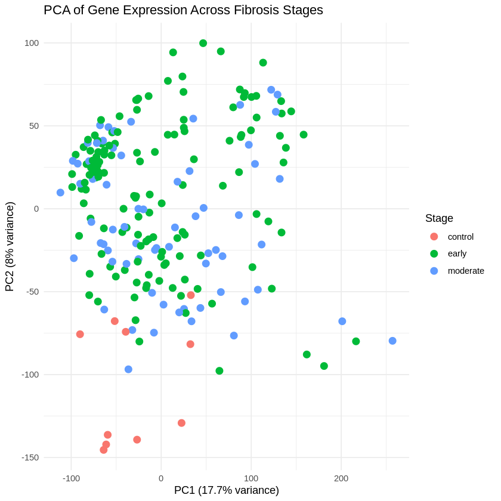
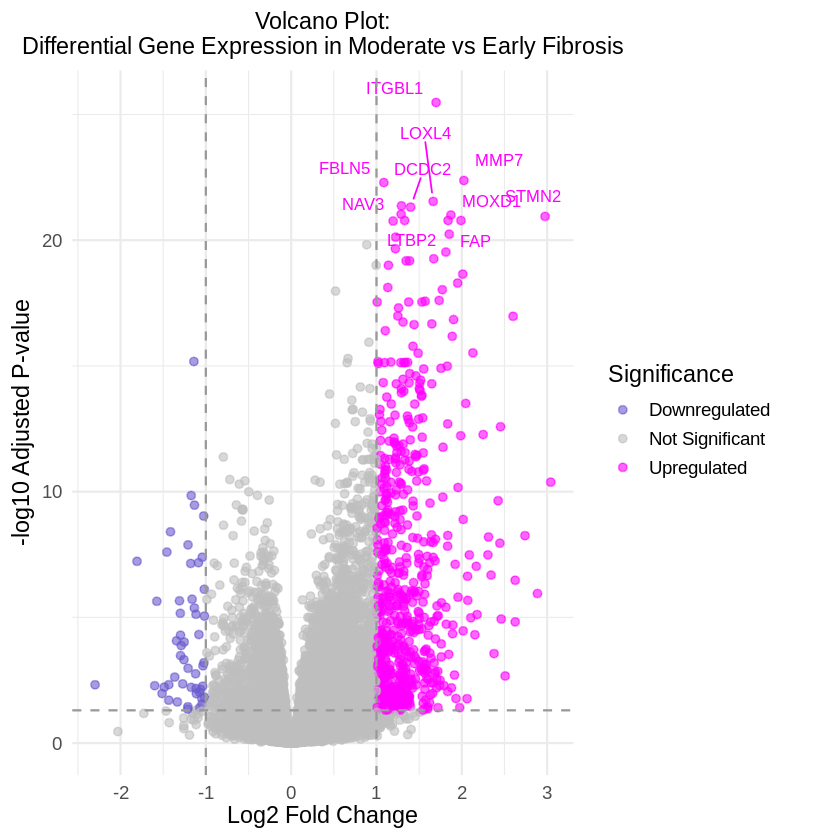
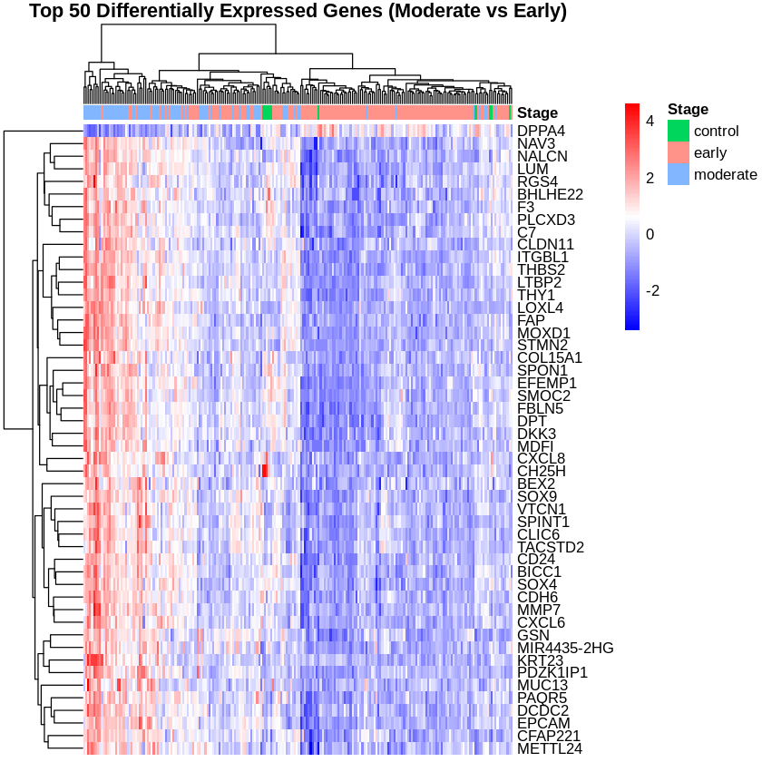
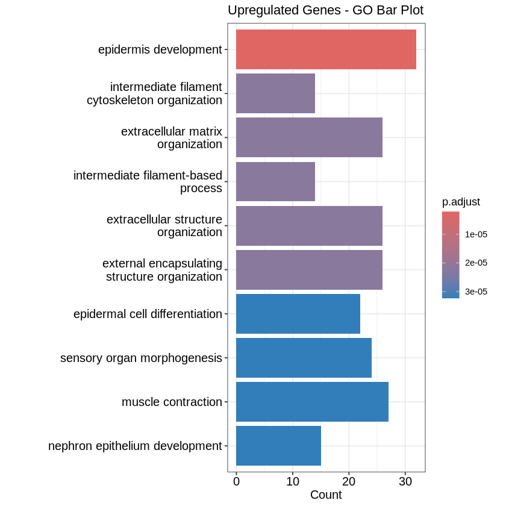
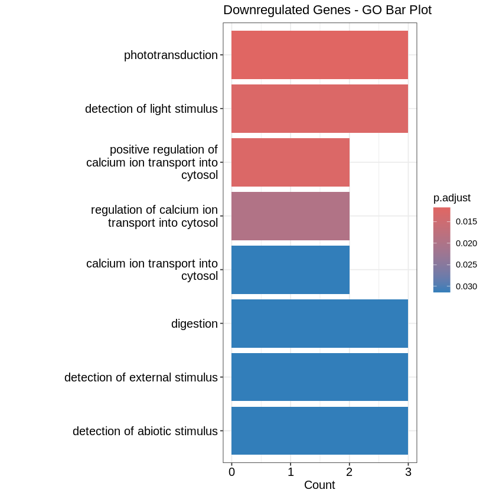
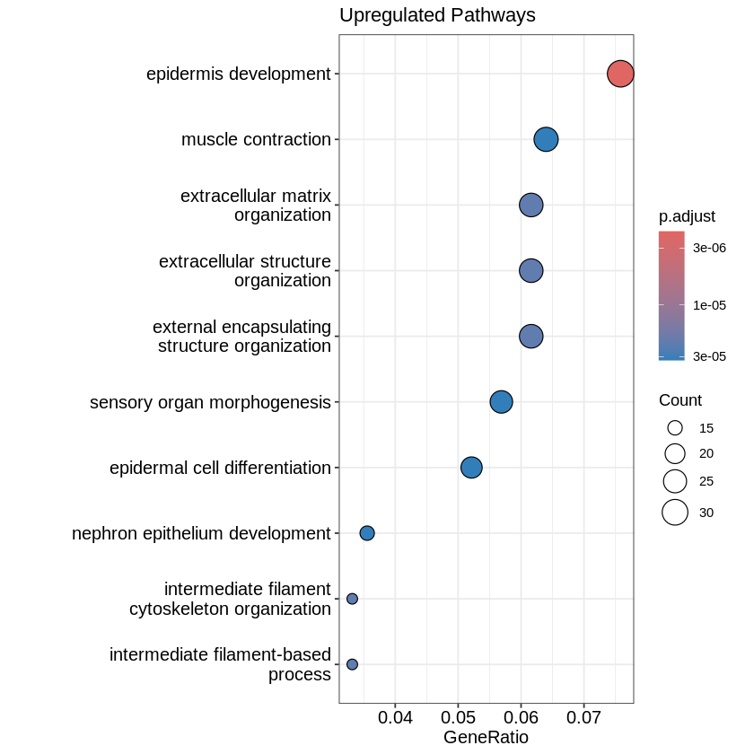
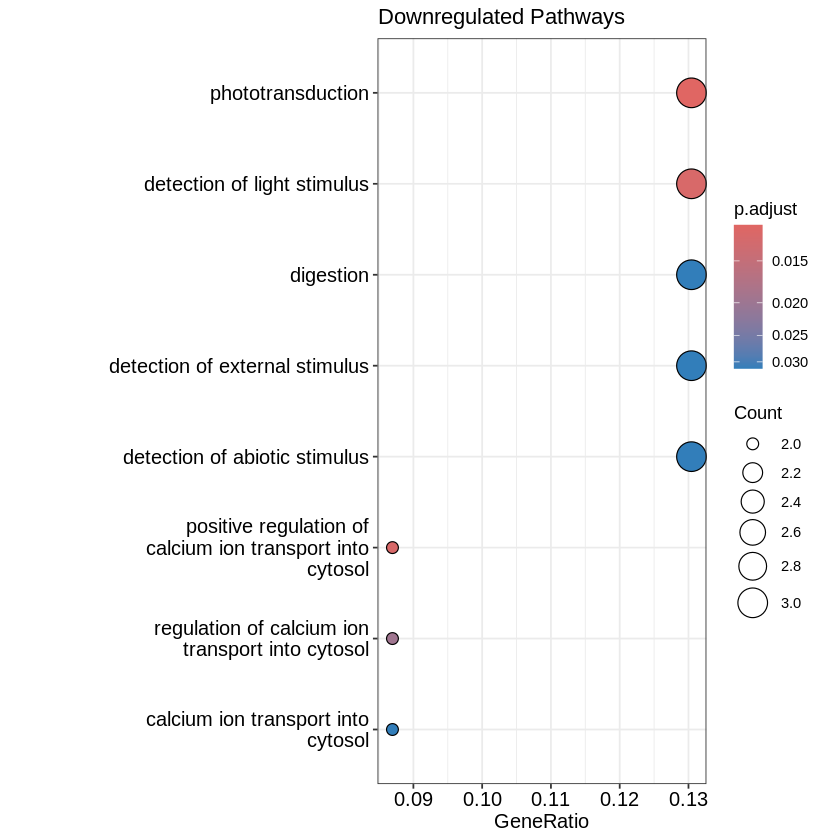

if (!requireNamespace("BiocManager", quietly = TRUE))
install.packages("BiocManager")
BiocManager::install(c("DESeq2", "readxl", "tidyverse", "ggplot2", "clusterProfiler", "org.Hs.eg.db"), force = TRUE)
library(DESeq2)
library(readxl)
library(tidyverse)
library(ggplot2)
library(clusterProfiler)
library(org.Hs.eg.db)
library(AnnotationDbi)
library(ggrepel)
install.packages("pheatmap", dependencies = TRUE)
library(pheatmap)
# Read in Metadata
meta_data <- read_excel("meta data.xlsx")
head(meta_data)
colnames(meta_data)
#Read in Raw Counts Data
raw_counts <- read.delim("GSE135251_raw_counts_GRCh38.p13_NCBI.tsv.gz")
rownames(raw_counts) <- raw_counts[,1]
counts <- raw_counts[, -1]
head(counts)
dim(counts)| Group | Accession | Title | Source name | Nas score | Fibrosis stage | Group in paper | Disease | Stage |
|---|---|---|---|---|---|---|---|---|
| <chr> | <chr> | <chr> | <chr> | <dbl> | <dbl> | <chr> | <chr> | <chr> |
| - | GSM3998171 | Liver patient 105 | NAFLD_early_liver biopsy | 5 | 0 | NASH_F0-F1 | NAFLD | early |
| - | GSM3998175 | Liver patient 112 | NAFLD_early_liver biopsy | 2 | 0 | NAFL | NAFLD | early |
| - | GSM3998189 | Liver patient 15 | NAFLD_early_liver biopsy | 5 | 0 | NAFL | NAFLD | early |
| - | GSM3998202 | Liver patient 169 | NAFLD_early_liver biopsy | 5 | 0 | NAFL | NAFLD | early |
| - | GSM3998206 | Liver patient 173 | NAFLD_early_liver biopsy | 6 | 0 | NASH_F0-F1 | NAFLD | early |
| - | GSM3998213 | Liver patient 195 | NAFLD_early_liver biopsy | 4 | 0 | NAFL | NAFLD | early |
- 'Group'
- 'Accession'
- 'Title'
- 'Source name'
- 'Nas score'
- 'Fibrosis stage'
- 'Group in paper'
- 'Disease'
- 'Stage'
| GSM3998167 | GSM3998168 | GSM3998169 | GSM3998170 | GSM3998171 | GSM3998172 | GSM3998173 | GSM3998174 | GSM3998175 | GSM3998176 | ⋯ | GSM3998373 | GSM3998374 | GSM3998375 | GSM3998376 | GSM3998377 | GSM3998378 | GSM3998379 | GSM3998380 | GSM3998381 | GSM3998382 | |
|---|---|---|---|---|---|---|---|---|---|---|---|---|---|---|---|---|---|---|---|---|---|
| <int> | <int> | <int> | <int> | <int> | <int> | <int> | <int> | <int> | <int> | ⋯ | <int> | <int> | <int> | <int> | <int> | <int> | <int> | <int> | <int> | <int> | |
| 100287102 | 3 | 0 | 1 | 2 | 3 | 0 | 1 | 1 | 0 | 1 | ⋯ | 7 | 8 | 6 | 4 | 5 | 5 | 18 | 3 | 2 | 3 |
| 653635 | 165 | 133 | 140 | 216 | 263 | 119 | 336 | 184 | 88 | 100 | ⋯ | 436 | 304 | 297 | 282 | 220 | 303 | 374 | 277 | 325 | 468 |
| 102466751 | 5 | 5 | 3 | 11 | 9 | 8 | 12 | 7 | 2 | 2 | ⋯ | 22 | 10 | 5 | 5 | 11 | 8 | 10 | 8 | 6 | 15 |
| 107985730 | 0 | 0 | 0 | 1 | 0 | 1 | 1 | 0 | 0 | 0 | ⋯ | 1 | 0 | 0 | 2 | 1 | 1 | 0 | 1 | 0 | 1 |
| 100302278 | 0 | 0 | 0 | 0 | 0 | 0 | 0 | 0 | 0 | 0 | ⋯ | 0 | 0 | 0 | 0 | 0 | 0 | 0 | 0 | 0 | 0 |
| 645520 | 0 | 0 | 0 | 1 | 0 | 0 | 4 | 0 | 0 | 0 | ⋯ | 0 | 0 | 2 | 0 | 0 | 0 | 0 | 0 | 1 | 1 |
- 39376
- 216
# Match Metadata and Raw Counts
meta_data <- meta_data[match(colnames(counts), meta_data$Accession), ]
all(colnames(counts) == meta_data$Accession)
unique(meta_data$Stage)
TRUE
- 'early'
- 'moderate'
- 'control'
# Create DESeq2 dataset
DESeq_dataset <- DESeqDataSetFromMatrix(countData = counts, colData = meta_data, design =~ Stage)
# Run DESeq2
DESeq_dataset <- DESeq_dataset[rowSums(counts(DESeq_dataset)) > 10, ]
DESeq_dataset <- DESeq(DESeq_dataset)
DESeq_results <- results(DESeq_dataset, contrast = c("Stage", "moderate", "early"))
summary(DESeq_results)
out of 30918 with nonzero total read count
adjusted p-value < 0.1
LFC > 0 (up) : 4821, 16%
LFC < 0 (down) : 2940, 9.5%
outliers [1] : 0, 0%
low counts [2] : 4200, 14%
(mean count < 0)
[1] see 'cooksCutoff' argument of ?results
[2] see 'independentFiltering' argument of ?results
results_df <- as.data.frame(DESeq_results)
results_df$ENTREZID <- rownames(results_df)
# Remove NA
results_df <- results_df[!is.na(results_df$padj), ]
# Define significance
results_df$Significance <- "Not Significant"
results_df$Significance[results_df$padj < 0.05 & results_df$log2FoldChange > 1] <- "Upregulated"
results_df$Significance[results_df$padj < 0.05 & results_df$log2FoldChange < -1] <- "Downregulated"
# Significant genes
sig_genes <- results_df[results_df$padj < 0.05, ]
sig_genes <- sig_genes[order(sig_genes$padj), ]
write.csv(sig_genes, "DESeq2_sig_genes.csv")## PCA ANALYSIS
# Variance stabilizing transformation
PCA_fig <- vst(DESeq_dataset, blind = FALSE)
# Extract normalized expression matrix
vsd_matrix <- assay(PCA_fig)
# Rows = samples, columns = genes
vsd_matrix <- t(vsd_matrix)
# Run PCA
pca_results <- prcomp(vsd_matrix, scale = TRUE)
# Calculate variance explained
pca_variance <- pca_results$sdev^2
percent_var <- round(pca_variance / sum(pca_variance) * 100, 1)
# Create dataframe for plotting
pca_df <- data.frame(
PC1 = pca_results$x[,1],
PC2 = pca_results$x[,2],
Stage = meta_data$Stage
)
# PCA plot
ggplot(pca_df, aes(x = PC1, y = PC2, color = Stage)) +
geom_point(size = 3) +
theme_minimal() +
labs(
title = "PCA of Gene Expression Across Fibrosis Stages",
x = paste0("PC1 (", percent_var[1], "% variance)"),
y = paste0("PC2 (", percent_var[2], "% variance)")
)
## Volcano Plot
# create top genes
top10_genes <- results_df[order(results_df$padj), ][1:10, ]
# assign IDs
top10_genes$ENTREZID <- rownames(top10_genes)
# Map IDs to gene symbols
annotations <- select(org.Hs.eg.db, keys = top10_genes$ENTREZID, columns = "SYMBOL", keytype = "ENTREZID" )
# Merge annotations into top10 genes
top10_genes$SYMBOL <- annotations$SYMBOL[match(top10_genes$ENTREZID, annotations$ENTREZID)]
# Volcano plot
ggplot(results_df, aes(x = log2FoldChange, y = -log10(padj), color = Significance)) +
geom_point(alpha = 0.6) +
geom_text_repel(
data = top10_genes,
aes(label = SYMBOL),
size = 3.5,
box.padding = 0.5,
point.padding = 0.3,
max.overlaps = Inf,
show.legend = FALSE
) +
geom_vline(xintercept = c(-1, 1), linetype = "dashed", color = "gray60") +
geom_hline(yintercept = -log10(0.05), linetype = "dashed", color = "gray60") +
scale_color_manual(values = c(
"Upregulated" = "magenta",
"Downregulated" = "slateblue",
"Not Significant" = "gray"
)) +
theme_minimal(base_size = 14) +
theme(
plot.title = element_text(hjust = 0.5, size = 14),
legend.position = "right"
) +
xlab("Log2 Fold Change") +
ylab("-log10 Adjusted P-value") +
ggtitle("Volcano Plot:\nDifferential Gene Expression in Moderate vs Early Fibrosis")
## Heatmap
top_df <- results_df %>%
filter(Significance != "Not Significant") %>%
filter(!is.na(padj)) %>%
arrange(padj) %>%
head(200)
top_ids <- rownames(top_df)
# Map IDs to gene symbols
annotations <- select(
org.Hs.eg.db,
keys = top_ids,
columns = c("SYMBOL"),
keytype = "ENTREZID"
)
# Extract normalized counts
top_matrix <- assay(PCA_fig)[top_ids, ]
# Match symbols
gene_symbols <- annotations$SYMBOL[
match(rownames(top_matrix), annotations$ENTREZID)
]
# Remove LOC + NA
valid_genes <- !is.na(gene_symbols) & !grepl("^LOC", gene_symbols)
top_matrix <- top_matrix[valid_genes, ]
gene_symbols <- gene_symbols[valid_genes]
# Remove duplicate gene symbols
non_dup <- !duplicated(gene_symbols)
top_matrix <- top_matrix[non_dup, ]
gene_symbols <- gene_symbols[non_dup]
# Top 50
top_matrix <- top_matrix[1:50, ]
gene_symbols <- gene_symbols[1:50]
# Assign gene symbols
rownames(top_matrix) <- gene_symbols
top_matrix_scaled <- t(scale(t(top_matrix)))
# Annotation
annotation_col <- data.frame(Stage = meta_data$Stage)
rownames(annotation_col) <- colnames(top_matrix_scaled)
# Heatmap
pheatmap(top_matrix_scaled,
cluster_rows = TRUE,
cluster_cols = TRUE,
annotation_col = annotation_col,
show_rownames = TRUE,
show_colnames = FALSE,
color = colorRampPalette(c("blue", "white", "red"))(100),
main = "Top 50 Differentially Expressed Genes (Moderate vs Early)")
## Table
top_genes_pool <- sig_genes$ENTREZID[1:200]
# Annotate
annotations <- select(
org.Hs.eg.db,
keys = top_genes_pool,
columns = c("SYMBOL", "GENENAME"),
keytype = "ENTREZID"
)
# Build table
gene_annotation_table <- data.frame(
ENTREZID = annotations$ENTREZID,
SYMBOL = annotations$SYMBOL,
GENENAME = annotations$GENENAME,
stringsAsFactors = FALSE
)
# Remove NA + LOC
gene_annotation_table <- gene_annotation_table[
!is.na(gene_annotation_table$SYMBOL) &
!grepl("^LOC", gene_annotation_table$SYMBOL),
]
# Remove duplicates
gene_annotation_table <- gene_annotation_table[
!duplicated(gene_annotation_table$SYMBOL),
]
# Take top 50
gene_annotation_table <- gene_annotation_table[1:50, ]
gene_annotation_table
write.csv(gene_annotation_table, "Top50_Gene_Annotations.csv", row.names = FALSE)| ENTREZID | SYMBOL | GENENAME | |
|---|---|---|---|
| <chr> | <chr> | <chr> | |
| 1 | 9358 | ITGBL1 | integrin subunit beta like 1 |
| 2 | 4316 | MMP7 | matrix metallopeptidase 7 |
| 3 | 10516 | FBLN5 | fibulin 5 |
| 4 | 84171 | LOXL4 | lysyl oxidase like 4 |
| 5 | 89795 | NAV3 | neuron navigator 3 |
| 6 | 51473 | DCDC2 | doublecortin domain containing 2 |
| 7 | 4053 | LTBP2 | latent transforming growth factor beta binding protein 2 |
| 8 | 26002 | MOXD1 | monooxygenase DBH like 1 |
| 9 | 11075 | STMN2 | stathmin 2 |
| 10 | 2191 | FAP | fibroblast activation protein alpha |
| 11 | 80114 | BICC1 | BicC family RNA binding protein 1 |
| 13 | 54852 | PAQR5 | progestin and adipoQ receptor family member 5 |
| 14 | 2202 | EFEMP1 | EGF-like fibulin extracellular matrix protein 1 |
| 15 | 7058 | THBS2 | thrombospondin 2 |
| 16 | 51704 | GPRC5B | G protein-coupled receptor class C group 5 member B |
| 17 | 2152 | F3 | coagulation factor III, tissue factor |
| 18 | 6372 | CXCL6 | C-X-C motif chemokine ligand 6 |
| 19 | 54102 | CLIC6 | chloride intracellular channel 6 |
| 20 | 200373 | CFAP221 | cilia and flagella associated protein 221 |
| 21 | 345557 | PLCXD3 | phosphatidylinositol specific phospholipase C X domain containing 3 |
| 22 | 6659 | SOX4 | SRY-box transcription factor 4 |
| 23 | 182 | JAG1 | jagged canonical Notch ligand 1 |
| 24 | 64094 | SMOC2 | SPARC related modular calcium binding 2 |
| 25 | 3576 | CXCL8 | C-X-C motif chemokine ligand 8 |
| 26 | 2934 | GSN | gelsolin |
| 28 | 7168 | TPM1 | tropomyosin 1 |
| 29 | 9023 | CH25H | cholesterol 25-hydroxylase |
| 30 | 79679 | VTCN1 | V-set domain containing T cell activation inhibitor 1 |
| 31 | 1805 | DPT | dermatopontin |
| 32 | 1004 | CDH6 | cadherin 6 |
| 33 | 27122 | DKK3 | dickkopf Wnt signaling pathway inhibitor 3 |
| 34 | 259232 | NALCN | sodium leak channel, non-selective |
| 35 | 4060 | LUM | lumican |
| 36 | 25984 | KRT23 | keratin 23 |
| 37 | 1306 | COL15A1 | collagen type XV alpha 1 chain |
| 38 | 6662 | SOX9 | SRY-box transcription factor 9 |
| 39 | 4072 | EPCAM | epithelial cell adhesion molecule |
| 40 | 10418 | SPON1 | spondin 1 |
| 41 | 5010 | CLDN11 | claudin 11 |
| 42 | 10158 | PDZK1IP1 | PDZK1 interacting protein 1 |
| 43 | 3908 | LAMA2 | laminin subunit alpha 2 |
| 44 | 4070 | TACSTD2 | tumor associated calcium signal transducer 2 |
| 45 | 56667 | MUC13 | mucin 13, cell surface associated |
| 46 | 7070 | THY1 | Thy-1 cell surface antigen |
| 47 | 57639 | CCDC146 | coiled-coil domain containing 146 |
| 48 | 55211 | DPPA4 | developmental pluripotency associated 4 |
| 49 | 728464 | METTL24 | methyltransferase like 24 |
| 50 | 84707 | BEX2 | brain expressed X-linked 2 |
| 51 | 27319 | BHLHE22 | basic helix-loop-helix family member e22 |
| 52 | 5999 | RGS4 | regulator of G protein signaling 4 |
## Top 50 genes plot
# Get gene annotations
annotations <- select( org.Hs.eg.db, keys = top_genes_pool, columns = c("SYMBOL", "GENENAME"), keytype = "ENTREZID")
# Merge annotations
top_genes_df <- sig_genes[sig_genes$ENTREZID %in% top_genes_pool, ]
top_genes_df <- merge(top_genes_df, annotations, by = "ENTREZID")
# Remove LOC + NA
top_genes_df <- top_genes_df[!is.na(top_genes_df$SYMBOL) & !grepl("^LOC", top_genes_df$SYMBOL) & !is.na(top_genes_df$log2FoldChange), ]
# Remove duplicates
top_genes_df <- top_genes_df[!duplicated(top_genes_df$SYMBOL), ]
# Top 50
top_genes_df <- top_genes_df[order(top_genes_df$padj), ]
top_genes_df <- top_genes_df[1:50, ]
top_genes_df$SYMBOL <- as.character(top_genes_df$SYMBOL)
top_genes_df <- top_genes_df[order(top_genes_df$log2FoldChange), ]
top_genes_df$SYMBOL <- factor(top_genes_df$SYMBOL, levels = top_genes_df$SYMBOL)
top_genes_df$label <- top_genes_df$SYMBOL
# Plot
p <- ggplot(top_genes_df, aes(x = SYMBOL, y = log2FoldChange, fill = log2FoldChange > 0)) +
geom_col() +
coord_flip() +
scale_fill_manual(
values = c("TRUE" = "plum", "FALSE" = "palegreen3"),
labels = c("FALSE" = "Downregulated", "TRUE" = "Upregulated")
) +
geom_text(
aes(label = label),
hjust = ifelse(top_genes_df$log2FoldChange > 0, -0.1, 1.05),
size = 3
) +
scale_y_continuous(expand = expansion(mult = c(0.1, 0.2))) +
theme_minimal(base_size = 14) +
theme(
plot.title = element_text(hjust = 0.5)
) +
labs(
title = "Top 50 Differentially Expressed Genes (Moderate vs Early Fibrosis)",
x = "Gene Symbol",
y = "Log2 Fold Change",
fill = "Direction"
)
# Save figure
ggsave("top50_genes_plot.png", plot = p, width = 14, height = 10, units = "in", dpi = 300)## Upregulated genes
# Keep upregulated genes
up_pool <- results_df[results_df$log2FoldChange > 0, ]
# Rank high - low
up_pool <- up_pool[order(-up_pool$log2FoldChange), ]
top_up_pool <- head(up_pool, 200)
# Annotate
up_annotations <- select(
org.Hs.eg.db,
keys = top_up_pool$ENTREZID,
columns = c("SYMBOL", "GENENAME"),
keytype = "ENTREZID"
)
# Merge
top50_up_df <- merge(top_up_pool, up_annotations, by = "ENTREZID")
# Remove LOC + NA
top50_up_df <- top50_up_df[
!is.na(top50_up_df$SYMBOL) &
!grepl("^LOC", top50_up_df$SYMBOL),
]
# Remove duplicates
top50_up_df <- top50_up_df[
!duplicated(top50_up_df$SYMBOL),
]
# Top 50
top50_up_df <- top50_up_df[1:50, ]
# Order
top50_up_df$SYMBOL <- factor(
top50_up_df$SYMBOL,
levels = rev(top50_up_df$SYMBOL)
)
# Plot
p_up <- ggplot(top50_up_df, aes(x = SYMBOL, y = log2FoldChange)) +
geom_col(fill = "plum") +
coord_flip() +
theme_minimal(base_size = 14) +
theme(plot.title = element_text(hjust = 0.5)) +
labs(
title = "Top 50 Upregulated Genes (Moderate vs Early Fibrosis)",
x = "Gene Symbol",
y = "Log2 Fold Change"
)
# Save plot
ggsave("top50_upregulated.png", p_up, width = 12, height = 10, dpi = 300)## TOP 50 DOWNREGULATED
# Keep downregulated genes
down_pool <- results_df[results_df$log2FoldChange < 0, ]
# Rank by high - low
down_pool <- down_pool[order(down_pool$log2FoldChange), ]
top_down_pool <- head(down_pool, 200)
# Annotate
down_annotations <- select(
org.Hs.eg.db,
keys = top_down_pool$ENTREZID,
columns = c("SYMBOL", "GENENAME"),
keytype = "ENTREZID"
)
# Merge
top50_down_df <- merge(top_down_pool, down_annotations, by = "ENTREZID")
# Remove LOC + NA
top50_down_df <- top50_down_df[
!is.na(top50_down_df$SYMBOL) &
!grepl("^LOC", top50_down_df$SYMBOL),
]
# Remove duplicates
top50_down_df <- top50_down_df[
!duplicated(top50_down_df$SYMBOL),
]
# Top 50
top50_down_df <- top50_down_df[1:50, ]
# Order
top50_down_df$SYMBOL <- factor(
top50_down_df$SYMBOL,
levels = rev(top50_down_df$SYMBOL)
)
# Plot
p_down <- ggplot(top50_down_df, aes(x = SYMBOL, y = log2FoldChange)) +
geom_col(fill = "palegreen3") +
coord_flip() +
theme_minimal(base_size = 14) +
theme(plot.title = element_text(hjust = 0.5)) +
labs(
title = "Top 50 Downregulated Genes (Moderate vs Early Fibrosis)",
x = "Gene Symbol",
y = "Log2 Fold Change"
)
# Save plot
ggsave("top50_downregulated.png", p_down, width = 12, height = 10, dpi = 300)# Map to gene symbols
annotations_all <- select( org.Hs.eg.db, keys = sig_genes$ENTREZID, columns = "SYMBOL", keytype = "ENTREZID")
sig_annotated <- merge(sig_genes, annotations_all, by = "ENTREZID")
# Remove LOC + NA
sig_annotated <- sig_annotated[ !is.na(sig_annotated$SYMBOL) & !grepl("^LOC", sig_annotated$SYMBOL), ]
# Define gene lists
up_genes <- sig_annotated$ENTREZID[ sig_annotated$log2FoldChange > 1 ]
down_genes <- sig_annotated$ENTREZID[ sig_annotated$log2FoldChange < -1 ]
# Clean lists
up_genes <- unique(up_genes)
down_genes <- unique(down_genes)# Pathway Analysis
ego_up <- enrichGO(gene = up_genes, OrgDb = org.Hs.eg.db, keyType = "ENTREZID", ont = "BP", pAdjustMethod = "BH", pvalueCutoff = 0.05, qvalueCutoff = 0.2, readable = TRUE)
ego_down <- enrichGO(gene = down_genes, OrgDb = org.Hs.eg.db, keyType = "ENTREZID", ont = "BP", pAdjustMethod = "BH", pvalueCutoff = 0.05, qvalueCutoff = 0.2, readable = TRUE)# Bar plot for top 10 enriched pathways
barplot(ego_up, showCategory = 10, title = "Upregulated Genes - GO Bar Plot")
barplot(ego_down, showCategory = 10, title = "Downregulated Genes - GO Bar Plot")

dotplot(ego_up, showCategory = 10) + ggtitle("Upregulated Pathways")
dotplot(ego_down, showCategory = 10) + ggtitle("Downregulated Pathways")
